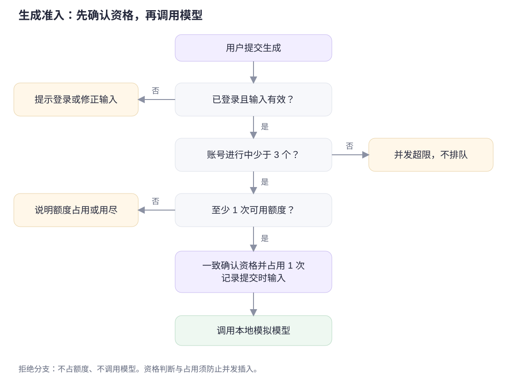
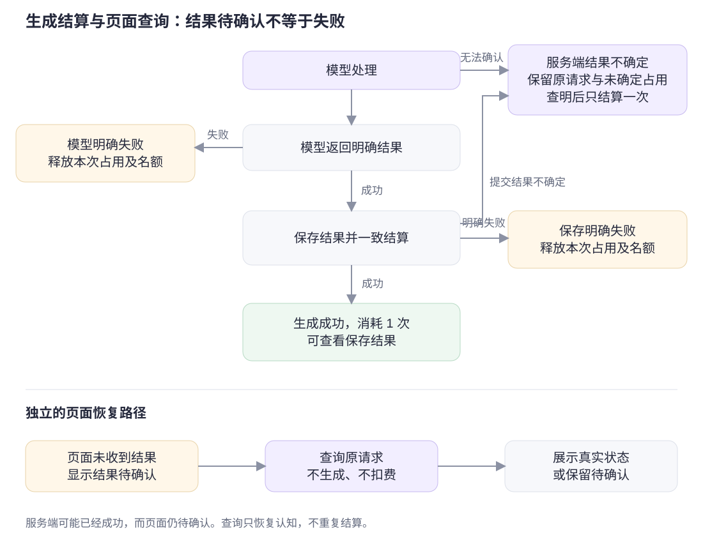

日程生成额度处理
小刘 · 产品经理方向 · 2026-10-21
生成前先占用额度，生成并保存成功后扣除，明确失败则释放占用。页面展示剩余次数和每次生成的记录，帮助用户判断该等待、重新生成，还是查询原结果。
本次完成产品方案和本地原型，未修改应用代码。
阅读顺序
也可打开 review.html 集中阅读。规则以 PRD.md 为准，文中的编号用于查找对应任务和案例；名词解释见 GLOSSARY.md。
原型预览
直接打开 prototype/index.html 可体验单页操作。要演示刷新和多个页面共享同一账号，建议启动本地服务：
# 在本文件所在的 docs/product 目录执行；需要 Python 3
python3 -m http.server 18765 --bind 127.0.0.1
打开 http://127.0.0.1:18765/review.html 或 http://127.0.0.1:18765/prototype/index.html。无需安装应用依赖、数据库或模型密钥。
顶部“演示控制”用于切换额度不足、生成失败、响应丢失等场景，也可模拟其他页面提交和手动完成生成。它不属于产品页面；点击“新账号”可重置数据。
原型使用浏览器本地数据，不连接真实账号、数据库或模型。具体演示方法见页面说明。
提交方法
将交付包中的根目录 SUBMISSION.md 和 docs/product/ 加入自己 Fork 的仓库，在分支中提交后向原仓库发起 PR。保留原仓库的 README、TASK、代码和配置。
PR 标题：产品｜小刘｜150****0251。正文可使用交付包根目录的 PR_BODY.md。
参考与维护
方案基于原仓库提交 114aeb2，阅读了题目、提交要求、数据结构和日程生成相关代码，尚未安装或运行原应用。
修改材料时先更新 Markdown，再按 qa/README.md 重新生成阅读版并检查。
日程生成额度处理：需求方案
现有流程先调用模型、再检查额度，多个请求同时提交时可能透支。本方案在调用前先检查并占用额度，日程生成并保存成功后扣除，明确失败则释放占用。每次生成保留一条记录，方便用户查看对应结果，或在断网后查询。
本次完成需求、流程和交互原型，应用功能待开发。验收案例见 ACCEPTANCE.md，已执行的原型检查见 VERIFICATION.md。
1. 用户与现状
用户已登录现有任务规划工具，添加待办和可用时长后生成日程。新账号拥有 3 次额度。
从代码看，后端先调用模拟模型，再检查请求上下文中的 credits；保存结果和扣费已有事务，但余额检查并未成为数据库扣减的原子前提。前端有生成中禁用及额度不足提示，尚无额度展示和生成记录入口。对应代码见 operations.ts 和 DemoAppPage.tsx。尚未运行原应用。
用户需要在生成前知道还能生成几次，生成后知道是否消耗额度，失败或断网后知道应重试还是查询。
2. 本次修改范围
| 来源 | 本次要求 |
|---|---|
| 题目明确要求 | 成功扣 1 次；无额度不调用模型；模型明确失败不扣；同账号并发不透支；结果与下一步清楚 |
| 讨论后补充 | 成功包含保存成功；每账号最多 3 个进行中请求；不排队；区分可用与占用；生成记录、刷新恢复及查询；输入以提交时为准 |
| 不纳入本次 | 支付、订阅、领取额度、跨账号防刷、Token 计价、跨请求结果复用、服务崩溃后自动补偿、完整日程编辑器、历史搜索或导出 |
仅考虑单服务、单数据库。不同生成请求可以有不同结果；本方案不要求相同输入的不同请求免费复用。
3. 具体规则
| 编号 | 规则与可观察行为 |
|---|---|
| R01 生成前检查 | 调用模型前，确认已登录、输入符合原有页面约束、可用额度至少 1 次、账号进行中请求少于 3 个。拒绝请求不占额度、不调用模型。页面展示不能替代服务端确认。 |
| R02 占用 | 接受请求时为该次生成占用 1 次额度，并保留提交时的输入；相同额度不可同时供其他请求使用。资格确认与占用对同时到达的请求也须成立。 |
| R03 成功 | 日程生成且保存成功才消耗 1 次。本请求占用转为消耗；结果、生成记录的成功状态及额度结算保持一致，不能出现扣费后无结果或成功但漏扣。 |
| R04 明确失败 | 模型明确失败或结果保存明确失败：不消耗额度，释放本请求占用及并发名额，记录失败原因。重复处理同一终态不能多扣或多释放。 |
| R05 并发 | 每账号最多 3 个实际进行中的生成请求。超限直接提示稍后再试，不排队；其他账号的额度与并发互不影响。 |
| R06 额度反馈 | 显示“可用 X 次”，有占用时补充“生成中占用 Y 次”，并说明“每次成功生成并保存消耗 1 次”。额度被占用与额度已耗尽使用不同提示。 |
| R07 页面操作 | 本页提交后防止连续点击。额度为 0 只限制新生成，原有待办操作、已保存结果查看和状态查询仍可用。生成期间修改内容只影响下一次生成。 |
| R08 记录与恢复 | 每次请求对应独立记录，含提交时间、输入摘要、处理状态与结果入口。刷新后可恢复；多个请求完成顺序不同也不能串联错结果。 |
| R09 结果待确认 | 网络异常只说明页面未确认结果。先查询原请求，不自动重发生成，不直接承诺失败、未扣或退回。查询失败仍保留待确认；查询成功再展示实际状态。 |
| R10 查询免费 | 查询原请求、查看保存结果及刷新页面，不消耗额度、不再调用模型。查询不等同于“重新生成”。 |
| R11 输入版本 | 原请求使用提交时的待办和时长，之后修改不追溯影响。明确失败后选择重新生成时，使用当前页面输入，并在操作前说明。 |
R11 的重新生成是一次新请求，需重新满足 R01；它不会清空旧失败记录。输入范围沿用现有界面：至少一条待办，可用时长 1—24 小时、步长 0.5 小时；不在本题扩展任务筛选规则。
单页面与账号的限制分别为：单页面同一时刻只提交 1 个请求，生成中或本页结果待确认时不再从该页提交；同一账号可以通过多个标签页、窗口或设备提交不同请求，账号合计最多 3 个进行中。原型的“模拟另一页面提交”只是评审工具，真实入口是其他页面。为单独检查并发上限，测试账号设为 6 次额度；新账号仍为 3 次，不新增充值入口。
4. 额度与状态表达
余额中尚未消耗的次数包含可用部分和占用部分。界面始终使用“可用”表达还能立即申请生成的次数。
| 操作 | 可用次数 | 占用次数 | 消耗次数 |
|---|---|---|---|
| 新账号 | 3 | 0 | 0 |
| 接受一次生成 | 2 | 1 | 0 |
| 该次生成并保存成功 | 2 | 0 | 1 |
| 若该次明确失败 | 3 | 0 | 0 |
后两行是分别从“接受一次生成”分出的两种结果，不是先成功再退款。
“生成中”“成功”“明确失败”是请求的处理状态。“结果待确认”表示页面还不知道结果，此时不能再次占用或直接释放原有额度。
账号额度显示最新账号状态，单条记录待确认表示该次生成响应未收到；因此额度可能已更新，而该条结果仍待查询。此时补充说明“账号额度可能已更新，查询不消耗额度”。查询找回成功结果后明确提示本次查询未消耗，不能被普通生成成功的扣费提示覆盖。
页面遇到限制时：先说明本页已有操作正在生成或待确认，再根据账号最新状态说明并发上限、额度占用或用尽。进行中已达 3 个时提示并发上限；未达上限但可用为 0 且有占用时提示额度正在使用；无占用且可用为 0 时提示用尽。拒绝始终不产生模型调用。
限制原因随账号状态变化更新；限制解除后移除旧的进行中提示，不能在所有请求完成后仍显示“已有 3 份正在生成”。
5. 页面与文案
页面保留任务输入和日程展示，增加额度区、生成记录区。结构及标注见 PROTOTYPE.md，流程见 FLOWS.md。
| 场景 | 提示 | 下一步 |
|---|---|---|
| 生成中 | 正在生成；成功生成并保存后消耗 1 次 | 等待，可继续操作待办 |
| 成功 | 日程已生成，消耗 1 次额度 | 查看本次日程 |
| 模型明确失败 | 生成失败，本次未消耗额度 | 调整内容后重新生成 |
| 保存明确失败 | 日程未能保存，本次未消耗额度 | 稍后重新生成 |
| 额度占用 | 可用额度正在使用，请等待生成结果 | 查看生成记录 |
| 额度用尽 | 额度已用尽，仍可编辑待办和查看已有日程 | 使用现有内容 |
| 并发已满 | 已有 3 份日程正在生成，请完成后再试 | 等待后手动提交 |
| 结果待确认 | 暂未确认生成结果，请先查询本次状态 | 查询原请求 |
| 查询确认成功 | 已找回原日程；查询未消耗额度 | 查看原日程 |
| 查询仍失败 | 暂时无法查询，请检查网络后再试 | 再次查询，不重新生成 |
明确失败后按钮标为“按当前内容重新生成”，旁边说明这是一次新请求。生成中及待确认记录不提供此重试入口。具体显示样式可调整，行为须符合 R01—R11。
6. 并发上限与异常处理
官方公开样本中，Midjourney Basic/Standard 图片生成上限为 3，Pro/Mega 的 Fast 图片生成为 12；Leonardo.Ai 不同个人套餐上限为 2/3/6。Midjourney 官方说明、Leonardo.Ai 官方说明。核查日期为 2026-10-21。
这些图像生成产品说明并发上限可以独立于额度设置，不能证明文本日程生成的最佳容量。本次采用 3 作为产品初值，后续根据真实响应时间、资源和失败率调整。
服务崩溃后的自动补偿按题目排除。服务端若无法确定某次请求的真实结算状态，不得把连接异常当作明确失败。长期无法确认的状态保留为已知边界，不承诺自动释放。
异常发生的位置需区分：页面没收到响应，服务端可能已有确定结果；服务端到模型超时或数据库提交中断，则服务端本身可能尚无确定结果。后两种不能仅凭异常就判为明确失败：保留原请求及尚未确定的占用，避免自动重试、释放或补扣；一旦查明真实终态，只完成一次对应结算。若成功提交已实际生效，不再次占用或扣费。AC17、AC18 只补充此类异常的验收设计，本轮不实现补偿系统。
7. 如何验收
开发完成后按验收案例检查模型调用日志、生成记录、保存结果和账号额度是否一致。页面提示正确、余额不为负，还不足以说明所有请求都处理正确。
规则对应的开发任务与验收案例见 DEVELOPMENT.md。
业务流程与状态
流程依据 PRD 的 R01—R11。调用模型前先检查额度和并发数量；页面暂时无法确认结果时，先查询原请求。
1. 生成前检查

额度资格检查、并发资格检查、占用与记录建立须对同时到达的请求保持一致；图中的分步判断用于解释业务，不能实现为互不保护的先查后写。
可编辑 Mermaid 源码
flowchart TD
submit["用户提交生成"] --> inputValid{"已登录且输入有效？"}
inputValid -->|"否"| fixInput["提示登录或修正输入"]
inputValid -->|"是"| concurrencyFree{"账号进行中少于 3 个？"}
concurrencyFree -->|"否"| limitReached["提示并发超限，不排队"]
concurrencyFree -->|"是"| creditFree{"至少 1 次可用额度？"}
creditFree -->|"否"| noCredit["说明额度占用或用尽"]
creditFree -->|"是"| reserve["一致确认资格并占用 1 次，记录提交时输入"]
reserve --> modelCall["调用本地模拟模型"]
所有拒绝分支均不占额度、不调用模型。真正是否接受以服务端最新状态为准，不能依赖旧页面显示。
2. 成功、明确失败与页面待确认

| 事件 | 原请求状态与额度 | 页面下一步 |
|---|---|---|
| 模型仍在处理 | 生成中，占用 1 次 | 等待，不重复提交 |
| 模型明确失败 | 明确失败，释放本次占用与名额 | 显示未消耗，可按当前输入重新生成 |
| 模型成功、保存明确失败 | 明确失败，释放本次占用与名额 | 显示保存失败、未消耗 |
| 生成并保存、结算一致完成 | 成功，占用转消耗 1 次，释放名额 | 展示对应日程 |
| 页面未收到结果或查询失败 | 页面无法判断原请求结果，不能直接改变结算 | 显示待确认，查询原请求 |
| 查询确认成功或失败 | 使用原请求的真实终态，不重复结算 | 展示原结果或明确失败提示 |
| 查询确认仍在处理 | 保持原请求生成中及对应占用 | 返回等待状态 |
可编辑 Mermaid 源码
flowchart TD
callModel["调用模型"] --> modelState["模型返回明确结果"]
modelState -->|"明确失败"| failRecord["记录失败，释放本次占用与名额"]
modelState -->|"成功"| saveResult["保存结果并一致结算"]
saveResult -->|"明确失败"| failRecord
saveResult -->|"成功"| successRecord["记录成功，消耗 1 次并释放名额"]
callModel -->|"服务端无法确认"| holdOriginal["保留原请求与未确定占用，查明后只结算一次"]
saveResult -->|"提交结果不确定"| holdOriginal
holdOriginal --> queryOriginal
responseLost["页面未收到结果"] --> uncertain["页面结果待确认"]
uncertain --> queryOriginal["查询原请求，不调用模型或扣费"]
queryOriginal --> actualState{"获取真实状态？"}
actualState -->|"成功"| showSaved["展示原保存结果"]
actualState -->|"明确失败"| showFailure["展示失败与未消耗提示"]
actualState -->|"仍在处理"| showRunning["继续等待原请求"]
actualState -->|"查询失败或无法确认"| uncertain
两个分支可以同时成立：服务端已经成功，页面仍待确认。查询原请求后更新页面，不创建新请求，也不再次扣除或释放额度。
服务端本身结果不确定的情况另见 AC17/AC18：模型调用超时或数据库提交连接中断均不能直接走“明确失败释放”。保留原请求和未确定的占用，查明真实结果后仅结算一次。这个边界不要求实现服务崩溃后的自动补偿。
3. 主要用户路径
| 路径 | 从哪里开始 | 到哪里结束 | 对应验收 |
|---|---|---|---|
| 正常生成 | 编辑待办，确认可用次数 | 看到日程与消耗说明 | AC01 |
| 额度不足 | 提交或返回旧页面 | 看到占用或用尽原因，仍能使用原有内容 | AC02、AC05、AC10 |
| 并发超限 | 其他页面已有 3 个请求 | 新请求被拒绝，完成后可手动再试 | AC06、AC07 |
| 明确失败 | 本次生成未成功完成 | 看到未消耗，可调整当前内容重新生成 | AC03、AC04、AC11 |
| 响应丢失 | 已提交但未拿到结果 | 查询原记录，恢复真实状态或保留待确认 | AC09、AC13 |
页面分别显示“生成中占用”和“已消耗”。
原型使用说明
原型用于演示 PRD 中的额度状态、生成记录和异常恢复；不连接真实应用。打开 交互原型，推荐按 README 启动本地预览。
页面区域
| 标注 | 页面区域 | 行为与规则 |
|---|---|---|
| 01 | 额度区 | 常显可用次数，有请求占用时显示占用次数；说明成功后才消耗。R02、R03、R06 |
| 02 | 待办与时长 | 延续原有输入、完成状态、删除及时长操作。生成中和零额度时仍可操作；修改只用于下次生成。R07、R11 |
| 03 | 生成入口 | 提交时显示处理中，防连续点击；限制原因在按钮附近可见。服务端仍需确认资格。R01、R05、R07 |
| 04 | 生成记录 | 每次请求一条，显示提交时间、输入摘要、状态及对应操作。R08 |
| 05 | 日程结果 | 显示所选记录的结果及提交时输入；生成失败不清空已有结果。R03、R08、R11 |
点击“显示页面标注”可以查看上述编号。标注及页面顶部“演示控制”不进入实际产品。
单页只允许 1 个进行中请求；账号最多 3 个是跨标签页、窗口或设备的合计上限。可打开三个同源页面分别提交，或用演示控制代替其他页面。并发场景将测试账号设为 6 次额度，以单独检查并发上限；新账号默认仍为 3 次。
建议演示顺序
- 载入“新账号”：添加或调整待办，生成一份日程，观察额度先占用、成功后消耗。
- 载入“最后 1 次”：通过“模拟另一页面提交”占用额度，观察本页不能争用同一额度。
- 载入“并发上限”：账号有 6 次额度，连续点击演示控制中的“模拟另一页面提交”四次；前三次开始，第四次拒绝。点击“推进至本批完成”检查结算。
- 载入“模型明确失败”或“保存明确失败”：提交后观察未消耗额度及可重新生成提示。
- 载入“响应丢失”：提交后显示待确认，推进生成完成，再点击记录中的“查询状态”；应恢复原结果，不增加调用。
- 勾选“模拟查询仍失败”，再次查询：保留待确认，提示检查网络，不产生新生成。
- 在同一地址另开页面或刷新，检查记录恢复。修改待办后查看旧结果，确认旧结果依据原输入。
演示与实际产品的区别
- 原型使用浏览器本地数据模拟账号、请求和结算；正常演示约 4 秒完成，也可手动推进。原项目模拟模型约 500 毫秒。
- 同一地址的多个页面共享本地数据，通过浏览器锁协调请求。真实数据库的并发处理需在开发后另行验证。
- 响应丢失表示生成结果响应未被页面收到，后台模拟处理仍可完成；查询失败可单独演示。
- 账号额度可能先更新，而单条结果仍待确认；记录中解释两者差别。查询找回结果后明确提示查询未消耗额度。
- 关闭所有原型页面后，模拟处理会暂停，再次打开时继续。
- 不同请求各自生成结果，不提供跨请求去重或免费复用。重新生成使用当前待办和时长。
- 用户页面用“生成失败”表达结果；“模型明确失败”等技术场景名称只出现在演示控制和交接材料中。已完成待办的时长输入不可编辑，与原页面保持一致。
- 服务端到模型超时、数据库提交结果不确定只在 AC17/AC18 设计中覆盖，本原型不模拟这些后端故障。
- 具体布局可调整，额度和状态处理按 PRD 验收。
原型实际检查与截图见 VERIFICATION.md。
开发任务拆解
建议先完成额度处理和请求记录，再接入页面，最后按验收案例检查。以下任务尚未开发，具体实现方式由开发人员确定。
任务与依赖
| 编号 | 工作与交付 | 依赖 | 关联规则与验收 |
|---|---|---|---|
| D01 | 明确生成记录、输入副本、结果及额度占用的关联；给每次请求稳定标识，区分进行中、成功和明确失败。为原用户数据设计迁移，历史结果不丢失。输出数据变更及迁移说明。 | 无 | R02、R08、R11；AC10、AC11、AC12 |
| D02 | 在模型调用前确认登录、输入、可用额度与进行中数量；把资格确认和额度占用作为不可被其他请求插入的操作，拒绝不调用模型。完成生成前检查与额度占用。 | D01 | R01、R02、R05；AC02、AC05、AC06、AC14、AC16 |
| D03 | 模型成功后，使结果保存、记录成功与扣费一致完成；模型或保存明确失败仅释放本请求占用和名额。处理重复回调或重复终态操作，避免多扣、多释放。 | D02 | R03、R04；AC01、AC03、AC04、AC07、AC12、AC15 |
| D04 | 提供账号额度与并发状态、本人生成记录、原请求状态及结果查询。查询不生成、不扣费；校验记录归属。明确“还在处理”和“无法确认”的区别。 | D01、D03 | R08—R10；AC09、AC10、AC13 |
| D05 | 页面增加额度区和资格提示，生成入口防重复点击；保持待办操作。页面加载、重新获得焦点、生成或查询返回时刷新账号状态，提交仍由服务端确认；过期页面不放行无资格请求。 | D02、D04 | R01、R05—R07；AC02、AC05、AC06、AC08、AC10 |
| D06 | 增加独立生成记录和结果查看；网络异常转待确认，提供免费查询及查询失败提示。明确失败后按当前输入发起新生成。 | D04、D05 | R07—R11；AC03、AC04、AC09—AC12 |
| D07 | 建立可控验收条件：指定账号额度、保持多页面或直接调用请求重叠、模型明确失败、保存明确失败、响应丢失、查询失败；补充服务端模型调用超时、数据库提交结果不确定的独立测试条件。使用真实入口与数据库核验，输出脚本及运行说明；不扩展为崩溃补偿系统。 | D02—D06 | 全部案例，重点 AC04—AC06、AC09、AC15、AC17、AC18 |
| D08 | 执行验收并记录预期、实际、证据；核对原型与文案；补充迁移、启动和已知边界，更新提交说明。 | D07 | 全部案例 |
首轮可先完成 D01—D04，验证额度与结果的一致性；再接页面和异常恢复。不能仅靠前端禁用按钮代替 D02。
接口需要返回的信息
| 对象 | 需要提供的业务信息 |
|---|---|
| 账号状态 | 可用次数、占用次数、实际进行中数量、并发上限 |
| 接受生成 | 稳定的请求标识、提交时间、输入副本、初始状态及最新额度 |
| 拒绝生成 | 明确原因：额度占用、额度用尽、并发超限、输入不合法或未登录；不产生模型调用 |
| 查询记录 | 本人请求的真实状态、输入摘要、失败原因或已保存结果；无新调用及新扣费 |
| 执行日志 | 请求标识与模拟模型 callId 的关联，是否接受请求、占用、成功结算或失败释放的必要信息 |
不要求暴露数据库内部字段或锁策略给用户。若选择预占后扣费，需说明 credits 的含义与占用量如何计算；若改变现有字段含义，迁移和查询必须同步修改。
现有文件入口
schema.prisma：当前只有用户 credits、待办与保存结果，缺少完整请求状态及输入副本。src/demo-ai-app/operations.ts：生成操作、额度判断、保存与事务入口。src/demo-ai-app/DemoAppPage.tsx：待办、生成按钮及本次结果；尚无生成记录页面。src/demo-ai-app/mockAi.ts：本地模拟调用，含[fail]场景与 callId 日志；验收仍使用本地模拟，不接真实模型。main.wasp.ts及操作声明：按现有 Wasp 0.25.0 配置增加必要查询或操作，修改源文件而非.wasp/生成目录。
运行与检查
真实应用启动沿用根目录 README。开发后的并发测试脚本至少覆盖“1 次额度、多请求”和“额度大于 3、4 个同时请求”；需能稳定保持请求重叠，并记录实际模型调用数。不得用只模拟数据库返回值的测试证明真实并发安全。
完成依赖安装后，仍执行仓库基础检查：
wasp compile
npx tsc --project tsconfig.src.json --noEmit
npx tsc --project tsconfig.wasp.json --noEmit
本次未运行上述应用检查。开发完成后需执行数据库迁移和验收；服务崩溃后的自动补偿不在本次范围内。
验收案例
以下案例供应用开发完成后验收，当前均未执行。本次原型检查结果见 VERIFICATION.md。
测试准备
- 使用独立测试账号与数据库，至少准备 A、B 两个账号；记录测试前的额度、占用、进行中记录和结果数。
- 每次生成对应稳定请求标识，并能关联模拟模型日志的 callId。一次
mock-ai.started表示一次模型调用。 - 并发测试使用可控延迟或完成屏障保证请求重叠；原项目约 500 毫秒返回，快速手点不足以保证重叠。
- 模型失败可使用包含
[fail]的待办；保存明确失败、响应丢失、查询失败、服务端模型超时和数据库提交结果不确定，需由开发提供隔离的测试条件，现有项目没有全部现成入口。 - 账号 3 并发通过多页面或直接调用入口验收；单页面同一时刻只允许 1 个进行中请求。额度 6 是测试数据，新账号默认仍为 3。
- 比较测试前后状态的增量，不将旧结果、旧日志计入本次。记录实际结果、时间和证据路径。
案例表
| 编号 / 规则 | 前置条件 | 操作 | 可观察预期与证据 |
|---|---|---|---|
| AC01 / R01—R03 | A 可用 3、占用 0，有有效待办 | 生成一次，等待成功 | 进行中可用 2、占用 1；最终可用 2、占用 0；新增 1 份可查询结果和成功记录；模型开始及成功各 1 次。保存结果、扣费与成功状态对应同一请求。 |
| AC02 / R01、R07 | A 可用 0、占用 0，有历史结果 | 在页面和直接调用入口分别尝试生成；操作待办并查看旧结果 | 两种生成均拒绝，模型开始增量 0，额度不变；原有待办操作、结果查看可用；提示用尽，无虚假充值或领取入口。 |
| AC03 / R04 | A 可用 1、占用 0，待办包含 [fail] |
生成并等待明确失败 | 模型开始及失败各 1；占用先变 1，随后释放；最终可用 1，无成功结果；用户提示“生成失败，本次未消耗额度”，不把内部“模型明确失败”直接展示为结果文案，可按当前内容重新生成。 |
| AC04 / R03、R04 | A 可用 1，模型成功，测试条件强制结果保存明确失败 | 生成并观察结算 | 最终可用 1、占用 0，无本次成功结果及成功记录；显示保存失败、未消耗；原有结果不丢失。保存失败测试条件和数据库证据需单列。 |
| AC05 / R01、R02、R06 | A 可用 1、占用 0，确保所有请求重叠 | 同时提交至少 3 个不同请求 | 最多 1 个被接受并调用模型，其余拒绝不调用；尚有占用且未达并发上限时，提示“可用额度正在使用”，不能误称已全部消耗或并发超限。成功时最多扣 1，明确失败则恢复为 1；任何时点不透支，输入及结果对应正确。 |
| AC06 / R05 | A 测试数据设为可用 6、占用 0，确保请求重叠 | 用 4 个页面或直接调用入口同时提交 4 个请求；保持前 3 个未完成 | 恰有 3 个进入生成，第 4 个拒绝；模型开始增量 3，可用 3、占用 3；第 4 个不排队、不在稍后自动启动。初始 3 次额度不能替代本例。 |
| AC07 / R04、R05、R06 | 沿用 AC06，已有 3 个进行中请求 | 让其中一个成功或明确失败，再手动提交新请求 | 先释放一个并发名额；有可用额度时新请求可接受。若前一个失败，还应释放其占用；只处理该请求，不影响其他两个。旧的并发限制提示随最新状态解除或更新，不得在全部完成后仍声称有 3 份正在生成。 |
| AC08 / R07 | A 有足够额度，同一页面 | 快速连续点击或按键触发生成 | 同一页面该次操作只创建 1 个请求、1 次模型调用、最多消耗 1；按钮与提示反映处理中。仍需 AC05、AC06 证明跨页面保护。 |
| AC09 / R08—R10 | A 可用 1，接受请求后丢失生成响应；服务端实际成功 | 页面出现待确认后，刷新并查询原请求多次 | 原请求可找回并展示同一保存结果；模型开始总增量始终为 1、最终只扣 1。待确认阶段不声称已失败或已退款；若账号额度已更新，应解释与单条待确认的区别。查询不生成，找回结果后明确说明本次查询未消耗，不被普通扣费提示覆盖。 |
| AC10 / R06、R08 | A 两个页面，页面乙保留旧的额度展示 | 页面甲消耗或占用额度，页面乙重新获得焦点后查询；也用旧状态尝试提交 | 页面乙刷新为账号真实状态；即使旧页面看似有额度，服务端仍按真实资格决定，不透支。刷新后记录及已保存结果可恢复。 |
| AC11 / R07、R11 | A 有有效待办，生成尚未完成 | 提交后修改待办和时长；原请求完成 | 结果对应提交时输入、标明提交时间；新编辑仍保留，未自动触发新生成。明确失败后重新生成使用当前输入，并重新检查额度与并发。 |
| AC12 / R03、R04、R08 | A 可用 3，准备 3 份可区分的输入；其中两份成功输入具有不同任务内容和时长 | 同时接受 3 个请求，控制为 2 成功、1 明确失败，按不同顺序完成 | 最终可用 1、占用 0，成功结果 2；逐个按请求标识核对各自提交输入、时长及结果，不能只核对计数。失败只释放自身占用，结果不互相覆盖或交换。 |
| AC13 / R09、R10 | 原请求结果待确认，状态查询仍无法连接 | 连续查询，再恢复查询条件 | 失败期间仍为待确认，提示检查网络后再查询；模型调用与额度不因查询变化；恢复后展示原请求实际状态，未确认前无重发入口。 |
| AC14 / R05、R08 | A 已有 3 个进行中请求；B 有可用额度 | B 发起生成，并尝试查询 A 的记录 | B 可独立生成，不受 A 的账号并发限制；B 无法读取 A 的记录或结果。 |
| AC15 / R03、R04 | 有一个已成功或已明确失败的请求 | 在受控条件下重复执行该请求的终态结算路径 | 已成功请求不再扣费、不重复保存结果；已失败请求不多释放额度；其他进行中请求的占用和名额不受影响。 |
| AC16 / R01 | 未登录，或输入不符合原页面约束 | 从页面及直接调用入口尝试生成 | 拒绝且提示明确，模型开始增量 0、额度无变化；输入问题不被错误提示为额度不足。 |
| AC17 / R04、R09 | A 可用 1，已占用；服务端调用模型时超时或连接重置，尚无法确定结果 | 在测试环境保持结果不确定，再分别恢复为可确认的成功或明确失败 | 不因超时立即释放、重试或补扣；原请求与尚未确定的占用保留，页面说明仍在处理或待确认。查明生成并保存成功则只消耗 1 次，查明明确失败则只释放本次占用；没有新调用或重复结算。仅验收设计，本轮未模拟此故障。 |
| AC18 / R03、R04、R09 | 模型已成功；结果保存及额度结算的数据库提交连接中断，提交结果不确定 | 分别模拟事务实际已提交和实际未提交，查询原请求及持久化结果 | 未查明前不将连接异常直接判为保存失败，不盲目退还或补扣；已提交则找回原成功结果，不重复结算；确认未提交且本次终止后释放原占用，无成功结果。持续无法确认不承诺自动恢复；不要求服务崩溃补偿系统。仅验收设计，本轮未模拟此故障。 |
执行记录格式
每例补充：执行日期、测试账号、操作或命令、预期、实际、结论、日志与数据证据链接。未运行写“未运行”，失败写明差异，不能用原型演示代替真实验收。
建议保留 AC05、AC06 的可重复执行并发脚本和参数、测试数据准备及清理说明。产品方向当前提供的是验收设计，脚本属于后续开发交付。
原型检查记录
本次已执行本地产品原型的浏览器检查，18/18 项通过。验证对象为 prototype/index.html；未安装或运行真实 Wasp 应用，真实业务验收 AC01—AC18 均待开发后执行。
1. 检查环境与运行方法
- 执行时间：2026-10-21 19:09（北京时间）。
- 浏览器：Chromium 151.0.7922.34；桌面 1440×1100，移动宽度 390 和 320。
- 操作：一次运行使用一个与真实浏览器隔离的 context；场景通常通过载入场景重置数据，P11 接续 P10 检查刷新。P05/P17 在同一 context 打开多个页面共享演示账号。检查页面可见文本与本地模拟记录。
- 时间控制：测试 context 固定 Date.now，通过演示控制手动完成，稳定保持请求重叠；产品默认约 4 秒自动完成保持不变，本次不验证自动完成耗时。
- 可重复执行脚本：qa/check-prototype.mjs；依赖与运行方式：qa/README.md。
- 原始结果：qa/results.json。
2. 原型检查结果
以下为原型检查结果，调用次数和额度均为本地模拟数据。
| 检查与操作场景 | 实际结果 | 结论 |
|---|---|---|
| P01 成功前占用，保存成功后消耗 | 提交后可用 2、占用 1；完成后剩余 2、占用 0，1 次模拟调用、1 份结果。 | 通过 |
| P02 零额度阻止生成，仍可编辑和查看 | 生成被阻止；可添加/删除待办、标记完成、修改未完成任务时长、查看旧日程和刷新记录；模拟调用增量 0。 | 通过 |
| P03 模型明确失败释放占用，不消耗 | 最终可用恢复 3、占用 0；1 次模拟调用，记录明确失败且显示未消耗。 | 通过 |
| P04 保存明确失败释放占用，无成功结果 | 最终可用恢复 3、占用 0；记录保存失败，无成功结果。 | 通过 |
| P05 两个页面争用最后一次，最多一次开始 | 两个独立页面争用 1 次额度，仅创建 1 条进行中记录、1 次模拟调用，其余提示额度正在使用；成功后剩余 0。 | 通过 |
| P06 有6次额度时仅接受3个并发，不排队 | 可用初始 6；4 次同时段提交接受 3 次，第四次提示超限，完成后剩余 3，无自动排队调用。 | 通过 |
| P07 完成后释放名额，可手动新提交 | 前三次完成后名额释放并清除旧并发提示，手动第四次被接受；最终 4 次模拟调用、剩余 2。 | 通过 |
| P08 本页连续触发不创建重复请求 | 本页连续触发只创建 1 个请求、1 次模拟调用，成功后剩余 2。 | 通过 |
| P09 响应丢失先查询原请求，不重复调用 | 丢失响应后保留待确认，查询找回原结果；模拟调用仍为 1、额度仍为 2，并明确提示查询未消耗额度。 | 通过 |
| P10 查询失败仍待确认，不生成、不退款 | 查询失败提示检查网络，记录仍待确认；模拟调用为 1、额度为 2，无错误退款。 | 通过 |
| P11 刷新保留待确认记录，恢复同一结果 | 刷新后原请求标识保留；查询恢复同一成功结果，模拟调用为 1、额度为 2。 | 通过 |
| P12 生成中编辑只影响后续输入 | 提交时为 2 项、8 小时；修改后当前为 3 项、4 小时，原结果仍使用 2 项、8 小时。 | 通过 |
| P13 不同输入的混合请求各自结算，结果不串联 | 两个成功请求分别使用 2 项/8 小时和 3 项/4 小时，按各自请求标识核对任务名称、结果与时长均一致；另一个明确失败，最终可用 1、占用 0。 | 通过 |
| P14 用户输入按文本展示，不执行HTML | 含 HTML 标记的输入显示为文字，没有执行或注入图片元素。 | 通过 |
| P15 桌面与移动端无横向溢出，标注可切换 | 1440、390、320 像素宽度无页面横向溢出，页面标注可切换；移动端先看记录再看结果。 | 通过 |
| P16 浏览器执行无未捕获脚本错误 | 检查期间未捕获的页面脚本错误为 0。 | 通过 |
| P17 另一页面重置后清除旧待确认引用，可再次生成 | 另一页面重置后清理旧待确认引用，本页可再次创建 1 个新请求，无静默阻塞。 | 通过 |
| P18 额度耗尽后仍可查询原请求，不再次消耗 | 3 次生成成功耗尽额度后仍可查询原待确认结果；调用总数仍为 3、额度仍为 0，查询提示未消耗。 | 通过 |
3. 页面证据


截图经人工查看，额度区、操作按钮、记录和结果的内容完整，未见遮挡或重叠。流程图和阅读版的检查另见 交付检查结果。
4. 真实应用尚未执行的验证
| 对象 | 当前状态 | 后续依据 |
|---|---|---|
| 真实账号、数据库及原模拟模型 | 未运行；不以原型证明并发安全 | ACCEPTANCE.md 全部案例 |
| 原项目启动、数据库迁移 | 未执行；产品交付未修改应用逻辑 | 原仓库 README 与 DEVELOPMENT.md |
| Wasp 编译及两项 TypeScript 检查 | 未执行；仅检查了独立原型脚本 | DEVELOPMENT.md 中的基础命令 |
| 数据库真实并发及结算一致性 | 待开发与受控测试 | AC04—AC07、AC12、AC15 |
| 真实响应丢失、查询失败及权限隔离 | 待开发与受控测试 | AC09、AC10、AC13、AC14 |
| 服务端模型超时、数据库提交结果不确定 | 仅补充验收设计，未在原型模拟或真实环境执行 | AC17、AC18；不扩展为服务崩溃自动补偿 |
名词说明
文中容易混淆的几个词，含义如下。具体规则见 PRD.md。
待办任务：用户录入的待处理事项，是日程生成的输入。 不要混用：生成请求、生成记录
生成请求：用户发起的一次生成日程操作。不同请求可以对应不同生成结果。 不要混用：待办任务
日程结果：基于一次请求提交的待办与可用时长生成的任务安排。 不要混用：待办列表
生成成功：日程已经生成且保存成功的结果。 不要混用：模型调用成功（尚不代表已保存）
生成记录：一次生成请求的状态与结果入口，用于区分并发请求、查询状态及找回结果。 不要混用：待办任务列表
额度：成功生成日程所消耗的次数单位。每成功生成一次消耗 1 次，新账号初始有 3 次。 不要混用：金额、Token、积分
可用额度：尚未消耗、也未被生成请求占用的次数，可供新请求使用。 不要混用：总剩余额度（未区分占用）
占用额度：为进行中请求暂时保留的次数，尚未确认为消耗。 不要混用：已扣额度
账号并发上限：同一账号同一时刻允许进行中的生成请求数量上限，本方案初值为 3。 不要混用：待办数量上限、每日次数上限
明确失败：能够确定本请求未成功完成生成与保存的结果。 不要混用：网络报错（可能只是页面未收到成功结果）
结果待确认：页面尚不能确定原请求实际处理结果的状态。 不要混用：生成失败、额度已退回
提交时输入：某次请求发起时的待办与时长，后续修改不改变这次输入。 不要混用：当前输入
提交说明
- 姓名：小刘
- 应聘方向：产品
- 打码手机号：150****0251
方案说明
现有流程在调用模型后才检查额度，多个请求同时提交时也可能透支。本方案在生成前先占用 1 次额度，日程生成并保存成功后扣除，明确失败则释放占用。同一账号最多同时生成 3 份日程，可用额度不足时不能开始新的生成。
页面增加可用次数、占用次数和生成记录。断网后可以查询原请求，避免重复生成；额度用完后，仍可编辑待办和查看已有日程。
本次提交产品方案和本地交互原型，未修改应用代码。原型的 18 项检查已通过，真实应用的验收需在开发完成后执行。
材料
下载后可打开 review.html 集中阅读；原型预览方法见 README。GitHub 文件页面不能直接运行 HTML。
补充说明
并发上限 3 是本次方案的初始设置，后续可根据实际负载调整。不提供排队，服务崩溃后的自动补偿按题目要求不在本次范围内。
使用 AI 辅助查阅资料、整理文档、制作原型和检查；额度扣除、并发限制和异常处理方式经过讨论确定。